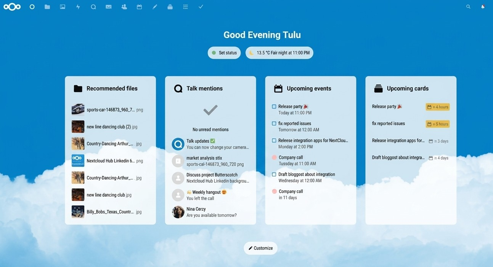
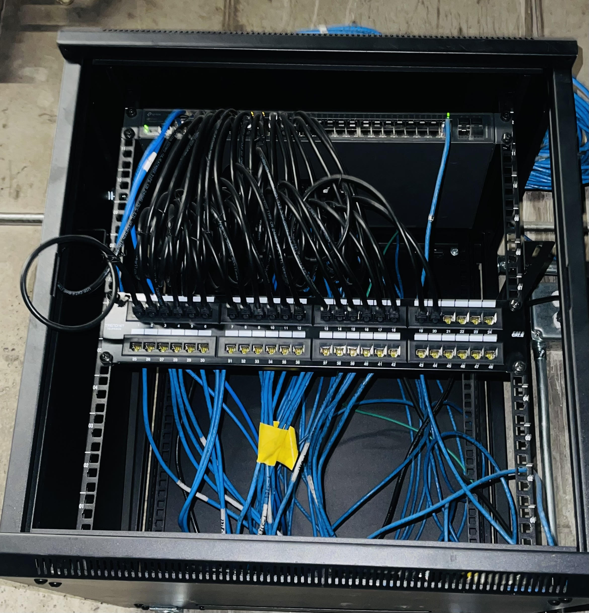
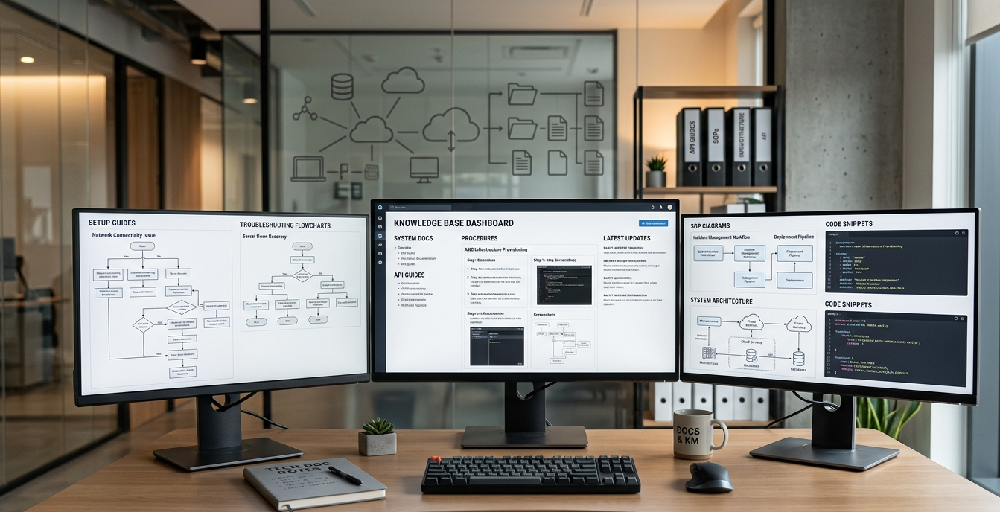

Projects
Enterprise Server Deployment & Infrastructure Setup
Designed and deployed a production-ready server environment including hardware installation (SSD, CPU, RAM, RAID) and full system configuration with Active Directory, DFS, and multiple VMs.

Backup & Disaster Recovery (Nakivo on Proxmox)
Researched, selected, and deployed Nakivo within a Proxmox virtualized environment. Configured automated backups, recovery processes, and tested failover scenarios for business continuity.

Private Cloud File System (Nextcloud)
Deployed and configured Nextcloud on Proxmox to provide secure, centralized document management with user access control and file sharing as an alternative to traditional network drives.

Network Infrastructure Setup (IDF Build-Out)
Built and configured a complete Intermediate Distribution Frame (IDF), including patch panel installation, cable management, switch configuration, VLANs, and reliable LAN/WAN connectivity.

Technical Documentation & Knowledge Base
Created detailed technical documentation including step-by-step setup guides, troubleshooting procedures, and SOPs to improve team knowledge sharing and reduce recurring resolution time.
PC Migration: Windows 10 → 11 (150+ Devices)
Planned and executed a large-scale migration of 150+ PCs from Windows 10 to Windows 11 using Clonezilla imaging workflows, minimizing downtime and ensuring continuity for all end users.